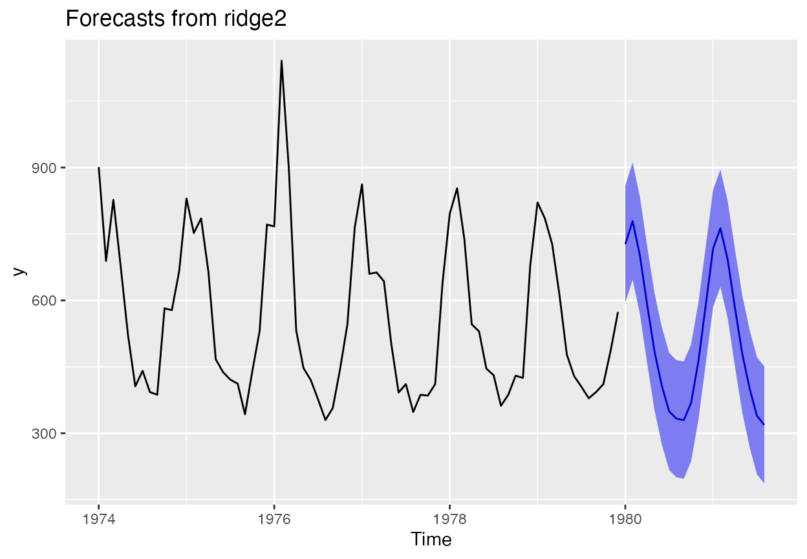
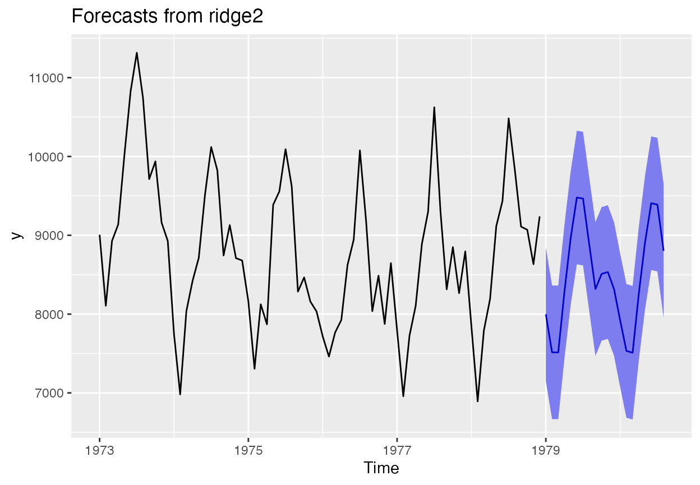

ridge2f
in ahead
ahead-univariate-season.Rmd
library(ahead)## Registered S3 method overwritten by 'quantmod':
## method from
## as.zoo.data.frame zoo
x <- fdeaths
xreg <- ahead::createtrendseason(x)
(z <- ahead::ridge2f(x, xreg = xreg, h=20))## Point Forecast Lo 95 Hi 95
## Jan 1980 727.0474 594.8211 859.2737
## Feb 1980 778.9497 646.7234 911.1760
## Mar 1980 701.0087 568.7824 833.2350
## Apr 1980 588.5904 456.3641 720.8167
## May 1980 483.9718 351.7455 616.1981
## Jun 1980 406.7422 274.5159 538.9685
## Jul 1980 349.2954 217.0691 481.5217
## Aug 1980 332.8913 200.6650 465.1176
## Sep 1980 329.7575 197.5312 461.9838
## Oct 1980 369.1545 236.9282 501.3808
## Nov 1980 463.0344 330.8081 595.2607
## Dec 1980 589.5833 457.3570 721.8096
## Jan 1981 716.8333 584.6070 849.0596
## Feb 1981 762.7985 630.5722 895.0248
## Mar 1981 691.7455 559.5192 823.9718
## Apr 1981 581.9940 449.7677 714.2203
## May 1981 478.6300 346.4037 610.8563
## Jun 1981 400.9575 268.7312 533.1838
## Jul 1981 339.2549 207.0286 471.4812
## Aug 1981 318.8176 186.5913 451.0439
autoplot(z)
x <- USAccDeaths
xreg <- ahead::createtrendseason(x)
(z <- ahead::ridge2f(x, xreg = xreg, h=20))## Point Forecast Lo 95 Hi 95
## Jan 1979 7997.208 7149.621 8844.795
## Feb 1979 7515.190 6667.603 8362.777
## Mar 1979 7514.466 6666.879 8362.053
## Apr 1979 8284.379 7436.792 9131.966
## May 1979 8960.748 8113.161 9808.335
## Jun 1979 9478.831 8631.244 10326.418
## Jul 1979 9465.568 8617.982 10313.155
## Aug 1979 8884.225 8036.638 9731.812
## Sep 1979 8317.634 7470.047 9165.221
## Oct 1979 8510.196 7662.610 9357.783
## Nov 1979 8533.745 7686.159 9381.332
## Dec 1979 8318.193 7470.607 9165.780
## Jan 1980 7916.457 7068.870 8764.044
## Feb 1980 7532.738 6685.151 8380.325
## Mar 1980 7510.071 6662.484 8357.658
## Apr 1980 8260.398 7412.811 9107.985
## May 1980 8907.931 8060.345 9755.518
## Jun 1980 9406.964 8559.377 10254.550
## Jul 1980 9389.390 8541.803 10236.976
## Aug 1980 8802.501 7954.914 9650.087
autoplot(z)